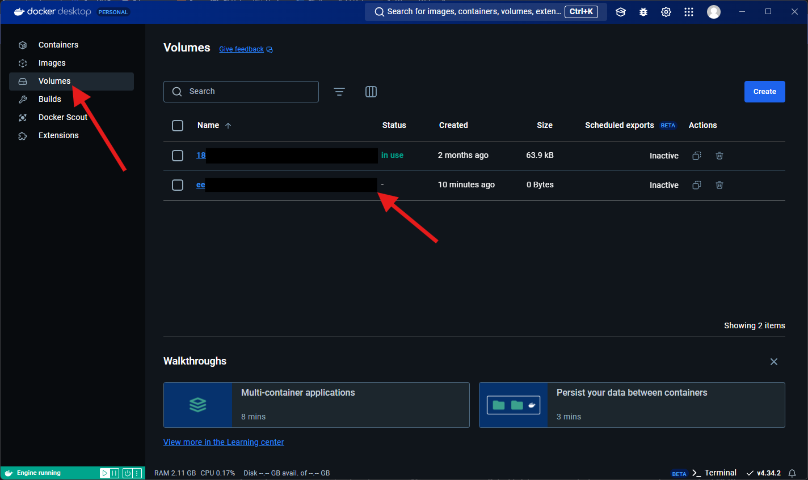
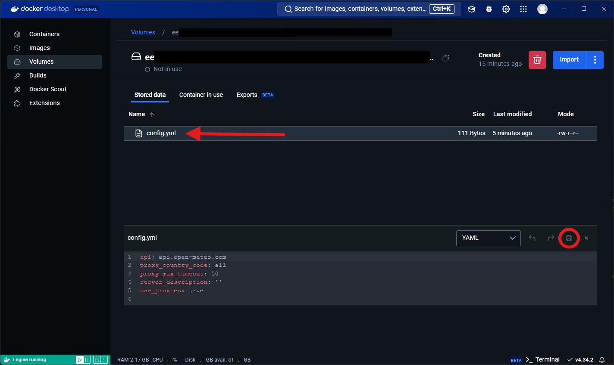

Guide de démarrage
Installation et utilisation
Depuis Docker Hub (recommandé)
Avertissement important sur la sécurité
Nous vous recommandons fortement de toujours utiliser la dernière version de l'image Docker (tag: latest) si vous souhaitez déployer Wezzer au grand public. De plus, veillez à garder votre conteneur à jour en vérifiant les mises à jour de l'image régulièrement.
Puis créez un conteneur :
Installer une autre version
Vous pouvez également télécharger une autre version de l'image Docker. Par exemple, si vous souhaitez télécharger la version 0.2, il vous suffira d'effectuer cette commande :
N'oubliez pas de modifier la commande pour exécuter le conteneur :
Votre instance est désormais en ligne, suis l'adresse http://localhost:8080.
Info
Vous pouvez changer le port utilisé par l'application en changeant la commande comme ceci :
Exemple ; J'ai envie d'héberger mon application sur le port 5780 :
Astuce
Si vous souhaitez que le conteneur redémarre avec votre système, vous pouvez utiliser la commande suivante :
Changer le nombre de threads
Afin de supporter plus de requêtes sur votre serveur, vous pouvez modifier le nombre de threads grâce à une variable d'environnement. Pour ce faire, supprimez votre ancien conteneur (en faisant une sauvegarde des paramètres de votre conteneur), puis mettez à jour l'image vers la dernière version.
Entrez ensuite la commande suivante :
Replacez 16 (valeur par défaut) par le nombre de threads désiré.
Depuis la source
- Cloner le dépôt
- Créer l'image Docker
- Démarrer le conteneur créé
Paramètrer une instance
Accéder au fichier de configuration
Sur Docker Desktop (Windows, Linux, Mac)
Pour ce faire, rendez vous dans la catégorie Volumes. Une fois que vous êtes dans cette catégorie, vous devez identifier le volume correspondant au conteneur. Si vous possédez différents conteneurs Docker sur votre machine, il est fort probable que vous en ayez plusieurs. Nous vous recommandons d'analyser le contenu de chaque volume pour identifier le bon.

Vous voilà donc dans le volume généré par Wezzer. Vous y retrouverez le fichier config.yml, qui contient les paramètres. Pour le modifier, double-cliquez sur celui-ci, puis modifiez son contenu avec l'éditeur de texte intégré dans l'application. N'oubliez pas de respecter la syntaxe Yaml, et sauvegarder votre fichier en cliquant sur la disquette, entourée en rouge sur la capture d'écran.

Liste des paramètres disponibles
| Nom du paramètre | Type de valeur | Valeur par défaut | Description |
|---|---|---|---|
api  Uniquement pour les utilisateurs avancés Uniquement pour les utilisateurs avancés |
string (texte) |
api.open-meteo.com |
Permet de changer l'url vers l'API, afin d'utiliser une API alternative basée sur celle de Open-Meteo. |
| rss | string (texte) |
https://raw.githubusercontent.com/Luckyluka17/Wezzer/refs/heads/main/feed.xml |
Lien du flux RSS pour les notifications. |
| server_description | string (texte) |
vide | Ajoutez une description à votre serveur visible par les utilisateurs. |
| use_proxies | bool (condition) |
true |
Choisissez d'utiliser ou non un proxy pour les requêtes effectuées vers l'api de open-meteo. |
| proxy_country_code | string (texte) |
all |
Définit la localisation du proxy. Veuillez consulter cette page pour avoir plus de détails. |
| proxy_max_timeout | int (nombre entier) |
50 |
Définit la latence maximale du proxy ; par exemple, en spécifiant 50, Wezzer n'utilisera que des proxys avec une latence inférieure ou égale à 50 ms. |